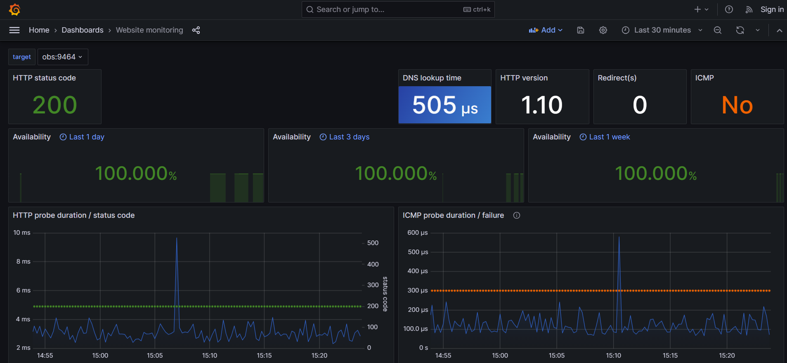

Import Dashboards in Grafana
Scope
One of the most important features of Grafana is the ability to create dashboards. Dashboards are a collection of panels that can be used to visualize data. Dashboards can be created from scratch or imported from the Grafana dashboard repository.
One goal of the project is to provide some sample dashboards that are imported from startup. Here you can find the resource at GitHub.
Implementation
Blackbox Exporter
The two dashboards for website monitoring are based on probing of endpoints over HTTP, HTTPS, DNS, IMCP and so on. The Blackbox exporter from Prometheus is used to allow probing and part of the docker-compose. It uses its own configuration file (./docker-setup/config/blackbox-exporter.yml) to define the modules (protocols). Example configuration:
modules:
http_2xx:
prober: http
timeout: 5s
http:
valid_http_versions: ["HTTP/1.1", "HTTP/2.0"]
valid_status_codes: []
method: GET
preferred_ip_protocol: "ip4"
ip_protocol_fallback: false
Prometheus configuration
In addition, two Prometheus jobs are defined in the Prometheus configuration file ( ./docker-setup/config/prometheus.yml). These jobs are later used as datasource for dashboards. Example job configuration:
- job_name: http-monitoring # To get metrics about the exporter’s targets
metrics_path: /probe # blackbox exporter opens a few probe_* endpoints
params:
module: [http_2xx] # protocol to use for probing
static_configs:
- targets:
- obs:9464 # Target to probe sample backend application
relabel_configs:
- source_labels: [__address__]
target_label: __param_target
- source_labels: [__param_target]
target_label: instance
- target_label: __address__
replacement: host.docker.internal:9115
Dashboards and Grafana volume configuration
The dashboards are stored as json files in the ./docker-setup/config/grafana/provisioning/dashboards folder. One point to note ist that the datasource (Prometheus job / query) has to be adapted to the Prometheus job name. In case of exporting a dashboard via Grafana all configurations are saved correctly.
{
"templating": {
"list": [
{
"hide": 2,
"label": "http_job",
"name": "http_job",
"query": "http-monitoring", #Prometheus job name
"queryValue": "",
"skipUrlSync": false,
"type": "constant"
}
]
}
}
Within the dashboard.yml some meta information and scrape config is stored. These two components must be added as volumes to Grafana docker-compose configuration.
volumes:
- ./config/grafana/provisioning/dashboards:/var/lib/grafana/dashboard
- ./config/grafana/provisioning/dashboards/dashboard.yml:/etc/grafana/provisioning/dashboards/dashboard.yaml
Results
